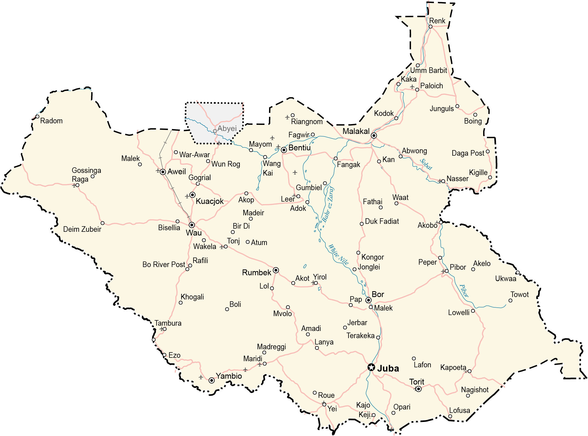

South Sudan is a landlocked country in east-central Africa. It borders Ethiopia to the east, Sudan to the north, the Central African Republic to the west, the Democratic Republic of Congo to the southwest, Uganda to the south, and Kenya to the southeast.
In 2011, South Sudan gained independence from the Republic of Sudan. Overall, this makes it one of the most recent sovereign states or countries. Juba is the capital and largest city of South Sudan. Other major cities are Malakal, Yei, and Wau.
Go back home